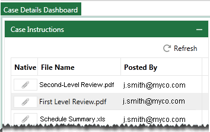

It is the Eclipse administrator’s responsibility to provide users with case-related instructions, alerts, and other documents (non-discovery documents such as pleadings or other court documents) to assist in the review process. Case files can be any appropriate format, such as HTML, Microsoft Word, plain text, or PDF.
Documents and information are available to users in the Eclipse Case Details Dashboard, by default on the right side of the Dashboard. The following figure shows an excerpt from the Case Instructions section in Eclipse.

Related pages: